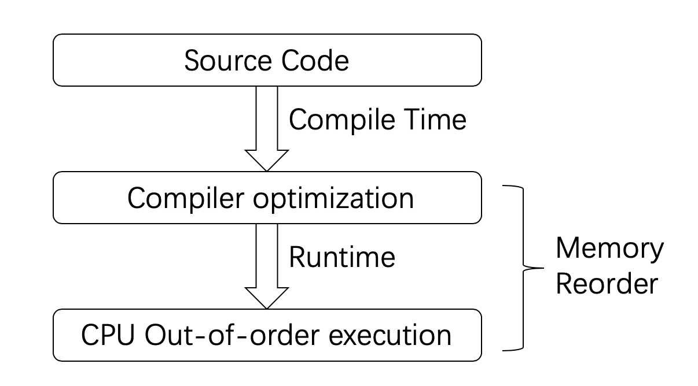

CPP无锁编程入门
前提
本文假设你已经掌握编程中一些锁的基本使用，对他们的原理有一定了解，同也要求对操作系统缓存结构有一定了解，如果没有这方面的了解，推荐阅读与程序员相关的CPU缓存知识一文。
为什么要使用无锁
在多线程场景下，为了避免竞争条件，保证任何时候只有一个线程可以进入临界区，会使用锁达到目的，这就存在两个问题：
- 可能会出现死锁
- 并发的效率不够
其中，死锁的问题不做过多介绍。而对于第二点，之所以并发效率不够高，是因为那些策略都是基于锁（lock-based）的：一旦有一个线程进入临界区，其他线程只能等待(睡眠)，而且线程从睡眠中唤醒涉及到线程上下文切换，大概是微妙级别的。
而基于无锁（lock-free）策略，可以避免以上问题，不过实现这种策略要更麻烦一些，需要对 C++ 内存模型有更深入的理解。
关于内存模型
内存模型是一种规则，它定义一套操作手法以及这些操作手法背后的详细含义。开发者利用这套操作完成数据的同步以避免竞争条件，而系统（包括：编译器，操作系统和处理器）保证执行的逻辑符合内存模型对于相关操作的定义。
内存模型主要包含了下面三个部分：
原子操作：顾名思义，这类操作一旦执行就不会被打断，无法看到它的中间状态，它要么是执行完成，要么没有执行
操作的局部顺序：一系列的操作不能被乱序
操作的可见性：定义了对于共享变量的操作如何对其他线程可见
在单线程环境下，以上问题对于开发者来说是不用关心的，只要保证代码逻辑正确即可。在引入了多线程之后，情况就会变得非常复杂。这是因为：现代计算机系统为了加快执行效率，自动的包含了很多的优化。这些优化虽然保证了在单线程环境下不破坏原来的逻辑，但是不保证多线程环境下代码运行顺序，就是无法确保一个代码指令执行的全局顺序。
这些优化导致开发者编写的代码和最终运行的程序往往会存在较大的差异，之所以会产生差异，原因主要来自下面三个方面：
- 编译器优化
- CPU 乱序执行
- CPU Cache 不一致性
Memory Reorder
Memory Reorder 包括编译器和处理器两种类型的乱序：

以下面这段伪代码为例：
1 | X = 0, Y = 0; |
由于 Memory Reorder 的存在，这就导致：线程1中事件发生的顺序虽然是先 a 后 b，但是对于线程2 来说，它看到结果可能却是先 b 后 a。当然，线程1 看线程2 也是一样的。当今的所有硬件平台，没有任何一个会提供完全的顺序一致（sequentially consistent）内存模型，因为这样做效率太低。不同的编译器和处理器对于 Memory Reorder 有不同的偏好，但它们都遵循一定的原则：不能修改单线程的行为(Thou shalt not modify the behavior of a single-threaded program.)，在这个基础上，它们可以做各种类型的优化。
编译器优化
以下面这段代码为例：
1 | int A, B; |
在使用 gcc 编译的时候，通过 -O 选项调整优化参数 ，因此以上代码可能会被优化为：
1 | int A, B; |
这里编译器只要保证优化后的结果在单线程环境下，执行的结果和原先一致即可。对于编译器来说，它知道当前线程中，数据的读写以及数据之间的依赖关系，但是并不知道哪些数据是在线程间共享。因此需要使用编译器屏障(Compiler Barrior)指令阻止编译器重排，保证编译程序时在优化屏障之前的指令不会在优化屏障之后执行:
1 |
|
从代码层度来讲，使用编译器屏障之后，无论编译器怎么优化，生成的汇报代码肯定是先执行 a 再执行 b，但是不能阻止 CPU 乱序执行。
乱序执行
除了编译器的代码优化和编译器指令重排会影响到代码的执行顺序之外，还有指令执行级别的乱序优化，流水线、乱序执行、分支预测都可能导致 CPU 在执行机器指令与程序代码的逻辑执行顺序不一致。
简单来讲，CPU 读取内存称之为 Load 操作，写入内存称之为 Store 操作，则指令重排中 Load 和 Store 两种操作会有 Load-Store、Store-Load、Load-Load、Store-Store 这四种可能的乱序结果：

其中 X86-64 下仅支持一种指令重排：Store-Load ，即读操作可能会重排到写操作前面，同时不同线程的写操作并没有保证全局可见，所谓全局可见则涉及到 cache 一致性。
CPU Cache 一致性
现代的主流 CPU 几乎都会包含多个核以及多级 Cache：

其中 L1缓分成两种，一种是指令缓存，一种是数据缓存。L2缓存和L3缓存不分指令和数据。L1 和 L2 缓存在每一个 CPU 核中，L3 则是所有CPU核心共享的内存。L1、L2、L3 的越离CPU近就越小，速度也越快，越离CPU远，速度也越慢。再往后面就是内存，内存的后面就是硬盘。我们来看一些他们的速度：
- L1 的存取速度：4 个CPU时钟周期
- L2 的存取速度：11 个CPU时钟周期
- L3 的存取速度：39 个CPU时钟周期
- RAM内存的存取速度：107 个CPU时钟周期
对于主流的 CPU 来说，缓存的写操作基本上是两种策略： Write-Through 和 Write-Back 两种策略。前者更新内容直接写内存并不同时更新 Cache，但要置 Cache 失效，后者先更新 Cache，随后异步更新内存。通常 X86 CPU 更新内存都使用 Write-Back 策略。
当一个核心在 Invalid 状态进行写入时，首先会给其它 CPU 核发送 Invalid 消息，然后把当前写入的数据写入到Store Buffer中。然后异步在某个时刻真正的写入到 Cache Line 中。当前CPU核如果要读 Cache Line 中的数据，需要先扫描 Store Buffer 之后再读取 Cache Line(Store-Buffer Forwarding)。但是此时其它 CPU 核是看不到当前该核的 Store Buffer 中的数据的，要等到 Store Buffer 中的数据被刷到了 Cache Line 之后才会触发失效操作。
而当一个 CPU 核收到 Invalid 消息时，会把消息写入自身的 Invalidate Queue 中，随后异步将其设为 Invalid 状态。和 Store Buffer 不同的是，当前 CPU 核心使用 Cache 时并不扫描 Invalidate Queue 部分，所以可能会有极短时间的脏读问题。这里的 Store Buffer 和 Invalidate Queue 的说法是针对一般的 SMP 架构来说的，不涉及具体架构。
简单来讲：某个 CPU 核修改了一个数据，同步这些数据到其他 cache 是需要时间的，于是就多线程场景下存在数据不一致的情况。为了解决这种 CPU 乱序执行以及 cache 不一致问题，一般不同 CPU 平台都提供 CPU 屏障指令，CPU 级别内存屏障其作用有两个：
- 防止指令之间的重排序
- 保证数据的可见性
下文以 x86 平台作为介绍。
x86 平台 CPU 屏障 CPU Barrior
x86 提供以下内存屏障指令：
sfence ，实现 Store Barrior 会将 store buffer 中缓存的修改刷入 L1 cache中，使得其他 CPU 核可以观察到这些修改，而且之后的写操作不会被调度到之前，即 sfence 之前的写操作一定在 sfence 完成且全局可见；
lfence ，实现 Load Barrior 会将 invalidate queue 失效，强制读取入 L1 cache中，而且 lfence 之后的读操作不会被调度到之前，即 lfence 之前的读操作一定在 lfence 完成（并未规定全局可见性）；
mfence ，实现 Full Barrior 同时刷新 store buffer 和 invalidate queue，保证了 mfence 前后的读写操作的顺序，同时要求mfence之后写操作结果全局可见之前，mfence 之前写操作结果全局可见；
lock 用来修饰当前指令操作的内存只能由当前 CPU 使用，若指令不操作内存仍然由用，因为这个修饰会让指令操作本身原子化，而且自带 Full Barrior 效果；还有指令比如 IO 操作的指令、exch等原子交换的指令，任何带有lock前缀的指令以及 CPUID 等指令都有内存屏障的作用。
X86-64 下仅支持一种指令重排：Store-Load ，即读操作可能会重排到写操作前面，同时不同线程的写操作并没有保证全局可见，要注意的是这个问题只能用 mfence 解决，不能靠组合 sfence 和 lfence 解决，用 sfence+lfence 组合仅可以解决重排问题，但不能解决全局可见性问题，简单理解不如视为 sfence 和 lfence 本身也能乱序重拍。
下面是 GNU 中的三种内存屏障定义方法，结合了编译器屏障和三种 CPU 屏障指令：
1 |
举个简单例子，有两个变量 x = 0, y = 0，两个 CPU 分别把 x，y 设 1，并读取 y 和 x 的值，如果不存在乱序则期望读取的结果不会全为 0，不幸的是，全为 0 的情况可能发生：
1 |
|
测试1结果如下：
1 | g++ -std=c++11 -Dtest1 -pthread test.cpp && ./a.out |
测试2结果如下：
1 | g++ -std=c++11 -Dtest2 -pthread 3.cpp && ./a.out |
概率降低很多，但仍会发生 r1 == r2 情况。
测试3、4、5 则不会产生 r1 == r2 情况：
1 | g++ -std=c++11 -Dtest3 -pthread 3.cpp && ./a.out |
C++11 原子操作库
在 C++11 标准出来之前，C++ 环境没有多线程的概念，C++11 引入线程支持库(thread)、原子操作库(atomic)，方便开发人员开发移植统一行为。
原子类型以及操作
| 类型别名 | 类型定义 |
|---|---|
| std::atomic_bool | std::atomic<bool> |
| std::atomic_char | std::atomic<char> |
| std::atomic_schar | std::atomic<signed char> |
| std::atomic_uchar | std::atomic<unsigned char> |
| std::atomic_int | std::atomic<int> |
| std::atomic_uint | std::atomic<unsigned> |
| std::atomic_short | std::atomic<short> |
| std::atomic_ushort | std::atomic<unsigned short> |
| std::atomic_long | std::atomic<long> |
| std::atomic_ulong | std::atomic<unsigned long> |
| std::atomic_llong | std::atomic<long long> |
| std::atomic_ullong | std::atomic<unsigned long long> |
| std::atomic_char16_t | std::atomic<char16_t> |
| std::atomic_char32_t | std::atomic<char32_t> |
| std::atomic_wchar_t | std::atomic<wchar_t> |
原子类型操作
| 方法 | 解释 |
|---|---|
| store | 原子地以非原子对象替换原子对象的值(公开成员函数) |
| load | 原子地获得原子对象的值(公开成员函数) |
| operator T | 从原子对象加载值(公开成员函数) |
| exchange | 原子地替换原子对象的值并获得它先前持有的值(公开成员函数) |
| compare_exchange_weak compare_exchange_strong |
原子地比较原子对象与非原子参数的值，若相等则进行交换，若不相等则进行加载(公开成员函数) |
| fetch_add | 原子地将参数加到存储于原子对象的值，并返回先前保有的值(公开成员函数) |
| fetch_sub | 原子地从存储于原子对象的值减去参数，并获得先前保有的值(公开成员函数) |
| fetch_and | 原子地进行参数和原子对象的值的逐位与，并获得先前保有的值(公开成员函数) |
| fetch_or | 原子地进行参数和原子对象的值的逐位或，并获得先前保有的值(公开成员函数) |
| fetch_xor | 原子地进行参数和原子对象的值的逐位异或，并获得先前保有的值(公开成员函数) |
| operator++ operator++(int) operator– operator–(int) |
令原子值增加或减少一(公开成员函数) |
| operator+= operator-= operator&= operator|= operator^= |
加、减，或与原子值进行逐位与、或、异或 |
更详细内容参阅 cppreference。
std::memory_order
cppreference 对 memory_order 解释如下：
std::memory_order specifies how memory accesses, including regular, non-atomic memory accesses, are to be ordered around an atomic operation. Absent any constraints on a multi-core system, when multiple threads simultaneously read and write to several variables, one thread can observe the values change in an order different from the order another thread wrote them. Indeed, the apparent order of changes can even differ among multiple reader threads. Some similar effects can occur even on uniprocessor systems due to compiler transformations allowed by the memory model.
简单理解为定义在多个线程之间共享的原子变量，其被修改之后，对其他线程的可见性。
C++ 支持 std::memory_order 列表为：
| 值 | 解释 |
|---|---|
| memory_order_relaxed | 宽松操作：没有同步或顺序制约，仅对此操作要求原子性。 |
| memory_order_consume | 有此内存顺序的加载操作，在其影响的内存位置进行消费操作：当前线程中依赖于当前加载的该值的读或写不能被重排到此加载前。其他释放同一原子变量的线程的对数据依赖变量的写入，为当前线程所可见。在大多数平台上，这只影响到编译器优化。 |
| memory_order_acquire | 有此内存顺序的加载操作，在其影响的内存位置进行获得操作：当前线程中读或写不能被重排到此加载前。其他释放同一原子变量的线程的所有写入，能为当前线程所见。 |
| memory_order_release | 有此内存顺序的存储操作进行释放操作：当前线程中的读或写不能被重排到此存储后。当前线程的所有写入，可见于获得该同一原子变量的其他线程，并且对该原子变量的带依赖写入变得对于其他消费同一原子对象的线程可见。 |
| memory_order_acq_rel | 带此内存顺序的读修改写操作既是获得操作又是释放操作。当前线程的读或写内存不能被重排到此存储前或后。所有释放同一原子变量的线程的写入可见于修改之前，而且修改可见于其他获得同一原子变量的线程。 |
| memory_order_seq_cst | 有此内存顺序的加载操作进行获得操作，存储操作进行释放操作，而读修改写操作进行获得操作和释放操作，再加上存在一个单独全序，其中所有线程以同一顺序观测到所有修改。 |
来源 cppreference。